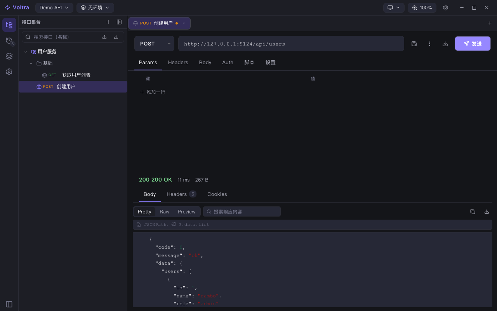
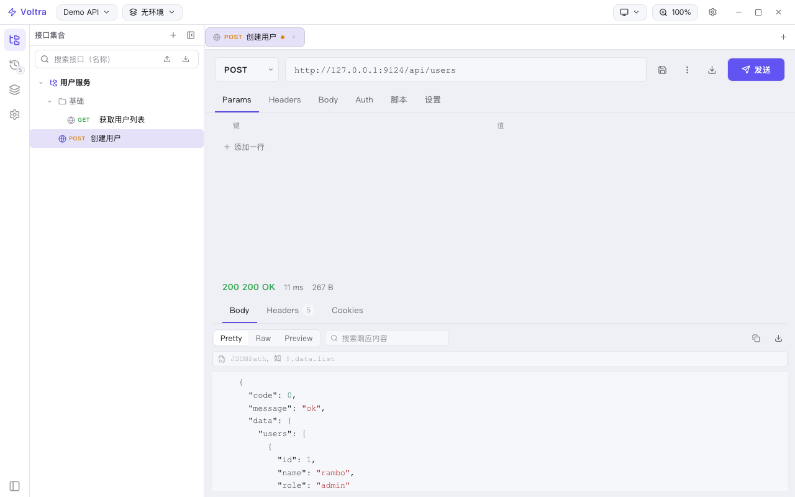
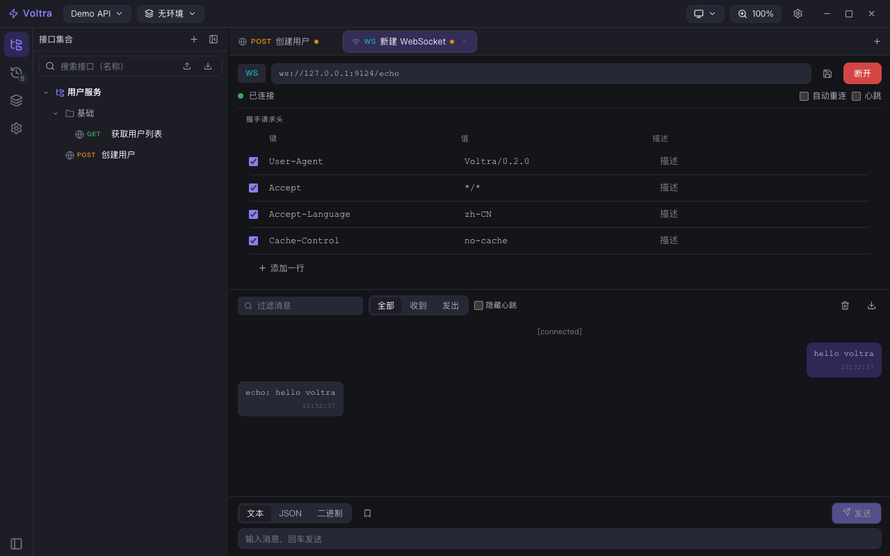

轻量级跨平台 API 接口调试工具 · 本地优先
Wails v3 + Go + Vue 3 构建的 Postman / Apifox 同类实现。项目化接口管理、十种 Auth、WebSocket、11 语言代码生成 —— 数据全部保存在本机，无需账号，离线可用。
六区专业化布局 · 明 / 暗 / 跟随系统三主题 · 整页缩放 50–150%



v0.2 已交付的全部能力
标题栏 / 活动栏 / 侧栏 / 标签区 / 主编辑区 / 状态栏；请求-响应分栏双向拖拽，明暗双主题，整页缩放 50–150%。
项目 → 集合 → 文件夹（无限层级）→ 接口；自研鼠标拖拽引擎排序 / 移入子目录，右键菜单、内联重命名、即时搜索。
7 种方法 + 自定义；form-data / urlencoded / raw（JSON·XML·HTML·Text）/ binary / graphql；URL 与 Query 双向同步、Header 补全。
Bearer / Basic / API Key / OAuth 1.0a / OAuth 2.0 / Digest / AWS SigV4 / JWT 解码面板 / 继承；签名类由 Go 侧实现。
全局 / 项目 / 环境 / 请求四层作用域；{{变量}} 全位置替换，未定义变量高亮告警，secret 类型区分。
Pretty / Raw / Preview、JSONPath 过滤、Set-Cookie 解析；一键发送并流式下载到本地，大文件不进内存。
WS/WSS 连接入树，收 / 发气泡时间线，JSON 自动格式化、二进制 hex 摘要，自动重连 / 心跳。
每次发送自动记录，日期分组、搜索、一键还原为新标签、另存为接口、清空 / 上限。
cURL / HTTPie / wget、Python、JS、Node、Java、PHP、Go、C#、Ruby、Swift、Kotlin；变量原样 / 真实值双模式。
Postman Collection v2.1 与 Environment 导入导出（含预览报告）、cURL 粘贴解析、项目 JSON 导出。
重启恢复全部工作现场；数据文件损坏自动隔离不崩；设置页可打开数据目录、导出完整备份。
数据只写本机标准配置目录，无账号、无云端、无遥测；接口与密钥不出你的机器。
真原生壳 + 高性能网络层 + 现代前端
Go 写的桌面框架，编译为单文件原生应用：macOS / Windows / Linux 一套代码，无 Electron 的内存与体积负担。
网络层与签名引擎全部在 Go 侧：ctx 取消、耗时分段采集、Digest / OAuth 1.0a / AWS SigV4 签名、流式下载直落盘。
组合式 API + 模块级 reactive store；CodeMirror 6 提供 JSON / XML / HTML / Text 高亮编辑与设计令牌驱动的三主题。
下载即用，或从源码构建
前往 Releases 下载（当前提供 macOS 构建，x86_64，Apple Silicon 经 Rosetta 2 运行）：
需要 Go 1.25+、Node 18+、wails3 CLI：
go install github.com/wailsapp/wails/v3/cmd/wails3@v3.0.0-beta.3cd frontend && npm install && cd ..task dev 开发模式 · task build 生产构建